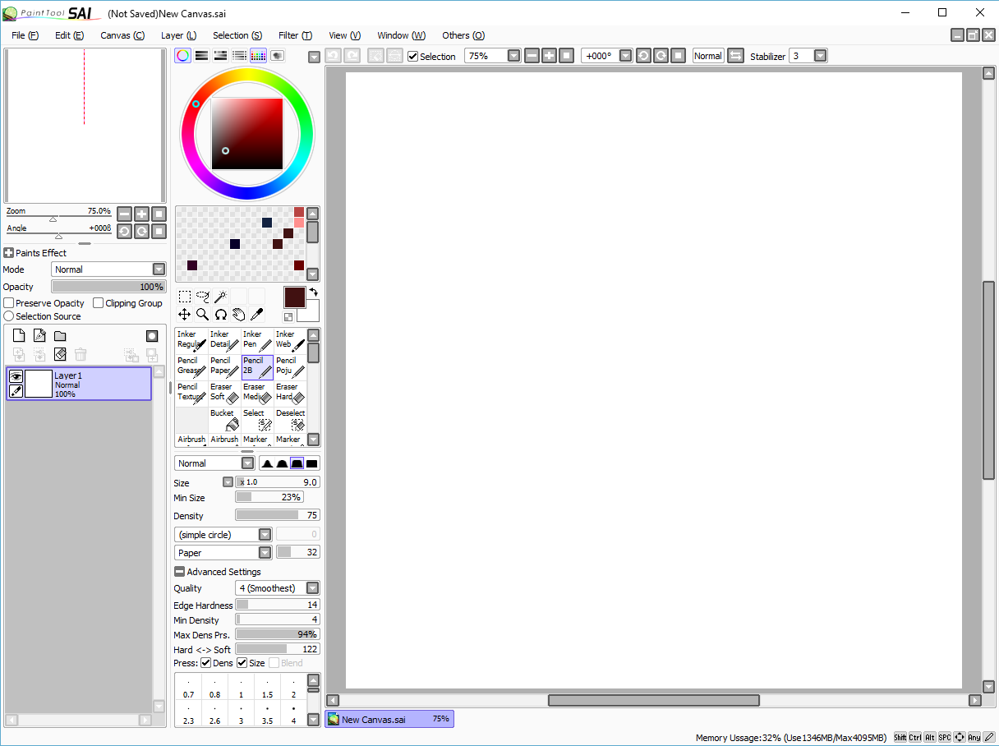

January 11th, 2016
Paint Tool SAI interface
I have always praised SAI for its accessable and easy to use interface. It is real simple compared to something like Photoshop: a program that requires perhaps years to master and hours to even pick up. SAI places nearly everything you need in one screen without the need to go windows or options digging in order to find one function you may need. Layers, color wheel, swatches, brush settings, and your canvas. That is all any simple artist wants to see and use when making a drawing or painting. It's not entirely perfect however, a lot of the options do not have any tooltips, meaning if you don't have any prior experience at all with how a digital drawing software works, you may not understand all the terms or icons and may have to experiement to find out. Granted, that's fairly easy and fun to do. I've had an overall positive experience with this software. I was able to pick up my pen and draw almost immediately after launching the program and it's my goto program for digital art.